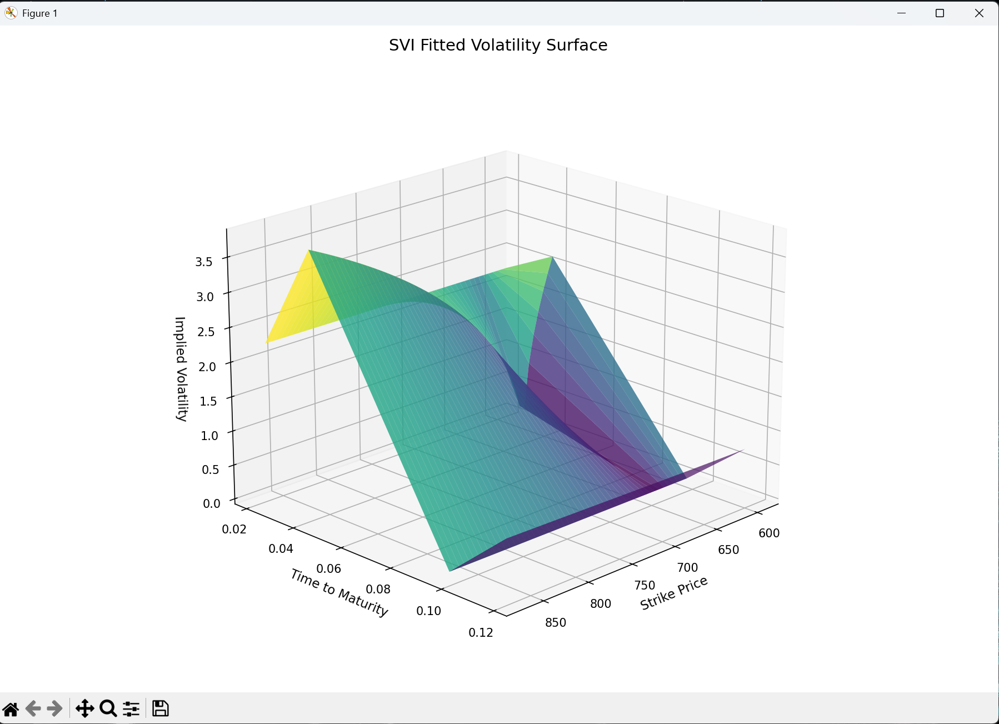
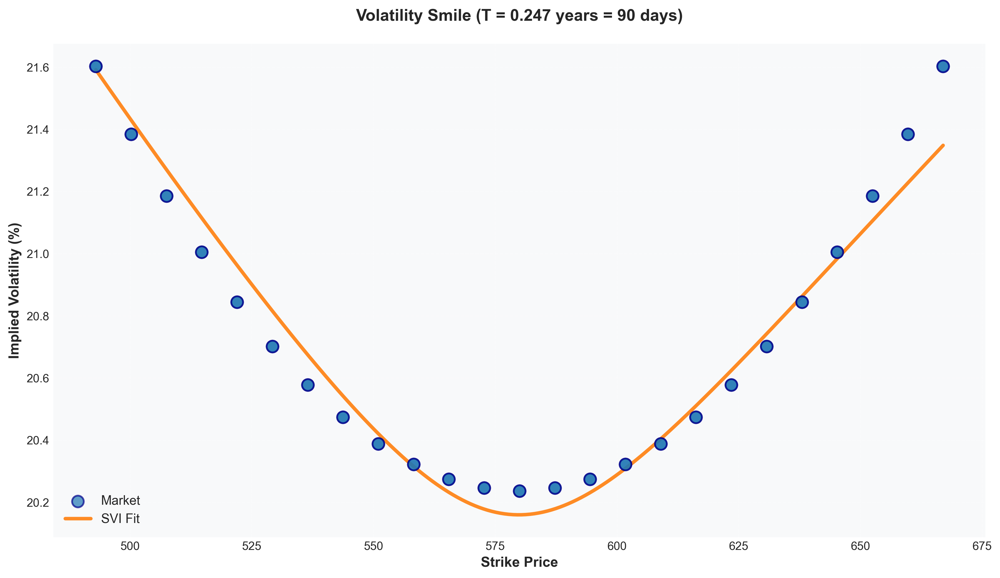
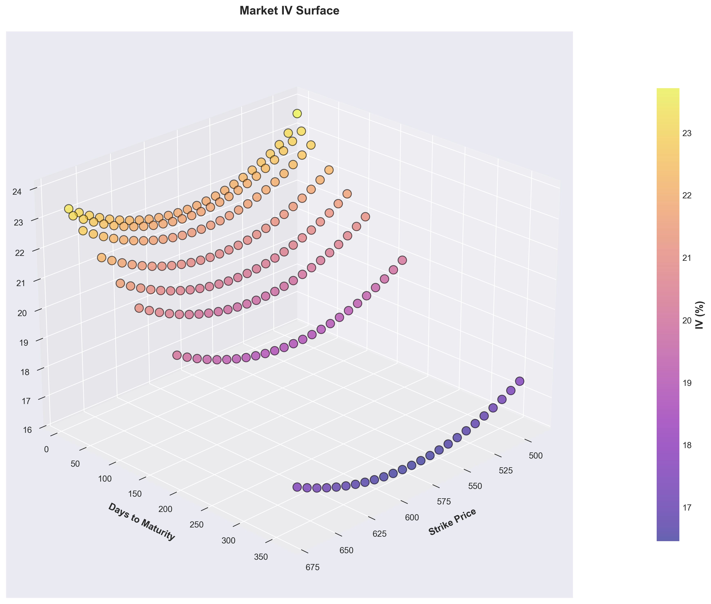

Research toolkit for constructing and analyzing arbitrage-free implied volatility surfaces. Combines SVI parameterization with rigorous no-arbitrage constraints, robust IV computation, static arbitrage detection, and fast Heston calibration via COS pricing.
ASVS provides independent, composable modules for IV surface research. Load option data, compute implied volatilities with Newton-Raphson + Brent fallback, validate against arbitrage constraints (put-call parity, butterfly spreads, calendar), fit smooth SVI smiles with Gatheral no-arbitrage enforcement, and calibrate Heston parameters via COS pricing.
Each component includes robust error handling: Jaeckel rational approximation for deep OTM/ITM initial guesses, configurable arbitrage tolerance bands, Feller condition enforcement on Heston parameters, and multi-start optimization. Use the fluent API to chain operations or work with individual modules independently.
The toolkit implements three complementary methodologies. Black-Scholes IV inversion solves for implied volatility from market option prices. SVI parameterization provides a parsimonious, arbitrage-free representation of the volatility smile. The Heston stochastic volatility model captures dynamics and Greeks via characteristic function methods.
ASVS provides a fluent API for end-to-end IV surface analysis. Chain operations from data ingestion through model fitting and visualization, or use individual modules as needed. All components are type-annotated, tested, and designed for research reproducibility.
Typical runtimes on Intel i7 hardware. All components are vectorized and optimized for batch processing. COS pricing with N=128 terms achieves <10 μs per option.


ASVS includes a complete suite of tools for volatility surface analysis: robust IV computation with fallback methods, arbitrage violation detection, SVI calibration with no-arbitrage enforcement, Heston stochastic volatility calibration, Greeks computation, and publication-quality visualizations.
| Component | Method | Feature | Status |
|---|---|---|---|
| IV Solver | Newton-Raphson | Jaeckel initial guess + Brent fallback | ✓ |
| Arbitrage Check | Put-Call Parity | PCP violations, butterfly spreads, calendar | ✓ |
| SVI Fitting | L-BFGS-B | Per-expiry, Gatheral constraints, rolling covar | ✓ |
| Heston Calib | COS Method | Global + local multi-start, Feller enforced | ✓ |
| Greeks | Finite Diff + Analytic | Delta, gamma, vega, theta surfaces | ✓ |
| Term Structure | Interpolation | ATM vol, skew, term structure curves | ✓ |
| Visualization | Matplotlib + Plotly | 3D surface, smile, Greeks heatmaps, comparison | ✓ |
| Model Compare | RMSE / MAE | Market vs SVI vs Heston error metrics | ✓ |
All components include comprehensive error handling, type annotations, and unit test coverage. COS pricing vectorized for batch operations.
Build analysis pipelines with a clean, composable API. All methods return self for chainability. Type-annotated for IDE support and research reproducibility.
The library is open-source (MIT license) with comprehensive test coverage (108 tests). Designed for research, backtesting, and derivatives pricing applications. Includes example notebooks, API documentation, and benchmark scripts.